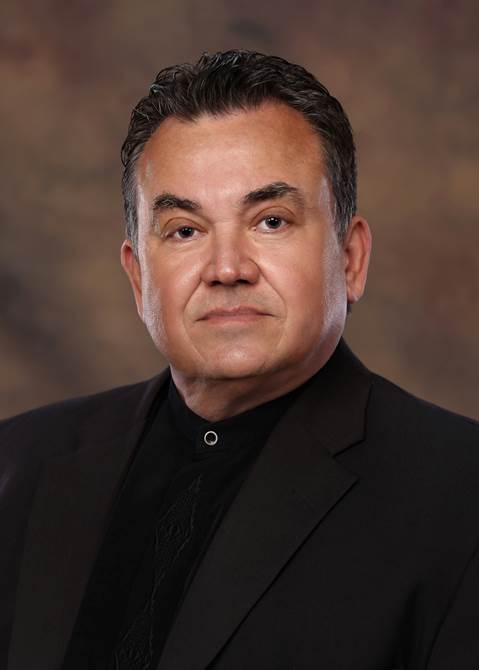

<div class="container content-section text-center">
  <div class="row">
    <h2>About Us</h2>

    <div class="col-lg-8 col-lg-offset-2">


 	  <p>


American Realty was founded September 1, 1997 by Linda and Larry Reaves. We specialize in Sales

and Leases in Anniston, AL and the Calhoun County area. We property manage in excess of 60 homes, several office buildings, two mobile home

parks, and a storage unit company.

 <br><br>

Linda Reaves, Office and Property Lease Manager.  Linda is a  founding partner of American Realty.

She has retired as a Realtor but remains very active as the Office Manager and Property Lease Manager.

 <br><br>

<br>

Larry Reaves, Qualifying Broker and a founding partner of American Realty. Larry is retired

as a District Sales Manager from Prudential Insurance Company and earned a CLU Designation from the

American College. He served in all chairs of the Calhoun Association of Life Underwriters, and as President

in 1981-1982. He was named Man of the Year in 1986. He was active on the Alabama Association of

Life Underwriters and Financial Advisers becoming State President in 1987-1988.He is a Multi-Million

Dollar Producer. 

 <br><br>

<br>

Rocco D' Gomez entered the real estate business with American Realty in 2003 after retiring after many

years as a well known restaurant owner/operator. He earned his Associate Broker's license in 2015 and

is a Multi-Million Dollar Producer. Fluent in both English and Spanish, Rocco is uniquely qualified to serve a

diverse public in listing and selling real estate. He also was licensed as a building contractor and buys,

remodels, and sells various type properties. 

<br><br> 

<br>

Korie Smith entered the real estate business with American Realty in 1999. She specializes in the residential

listing and selling market. She also buys, remodels, and sells properties. An excellent decorator, she can

give excellent advice to sellers to make their property more attractive to buyers.

 <br><br>

<br>

David Muncher joined American Realty in 1997 and quickly became a Multi-Million Dollar Producer. He has

been a licensed income tax accountant for 25 years and has shown many of his tax customers the advantage

of owning a home versus renting a home.         
    </p>   
</div>
</div>